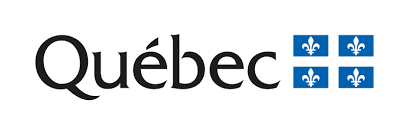

Vanier AI was made in collaboration with the following partners:

This project was made with the help of the NovaScience program from le Ministère de l'économie et de l'innovation.

This work was made possible with the help of the Fond de recherche du Québec – Nature et technologies (FRQNT)
This work was supported by the Mitacs nonprofit-organization through the College-level Research Internship Award.